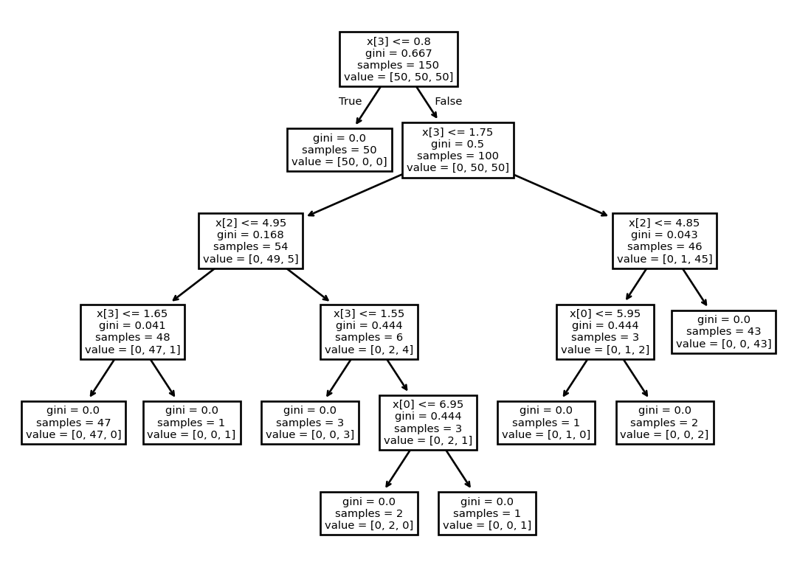

from sklearn.datasets import load_iris
from sklearn import tree
iris = load_iris()
X, y = iris.data, iris.target
clf = tree.DecisionTreeClassifier()
clf = clf.fit(X, y)Lecture 03
Notebook
Package and environment management
Frameworks
tree.plot_tree(clf)[Text(0.5, 0.9166666666666666, 'x[3] <= 0.8\ngini = 0.667\nsamples = 150\nvalue = [50, 50, 50]'),
Text(0.4230769230769231, 0.75, 'gini = 0.0\nsamples = 50\nvalue = [50, 0, 0]'),
Text(0.46153846153846156, 0.8333333333333333, 'True '),
Text(0.5769230769230769, 0.75, 'x[3] <= 1.75\ngini = 0.5\nsamples = 100\nvalue = [0, 50, 50]'),
Text(0.5384615384615384, 0.8333333333333333, ' False'),
Text(0.3076923076923077, 0.5833333333333334, 'x[2] <= 4.95\ngini = 0.168\nsamples = 54\nvalue = [0, 49, 5]'),
Text(0.15384615384615385, 0.4166666666666667, 'x[3] <= 1.65\ngini = 0.041\nsamples = 48\nvalue = [0, 47, 1]'),
Text(0.07692307692307693, 0.25, 'gini = 0.0\nsamples = 47\nvalue = [0, 47, 0]'),
Text(0.23076923076923078, 0.25, 'gini = 0.0\nsamples = 1\nvalue = [0, 0, 1]'),
Text(0.46153846153846156, 0.4166666666666667, 'x[3] <= 1.55\ngini = 0.444\nsamples = 6\nvalue = [0, 2, 4]'),
Text(0.38461538461538464, 0.25, 'gini = 0.0\nsamples = 3\nvalue = [0, 0, 3]'),
Text(0.5384615384615384, 0.25, 'x[0] <= 6.95\ngini = 0.444\nsamples = 3\nvalue = [0, 2, 1]'),
Text(0.46153846153846156, 0.08333333333333333, 'gini = 0.0\nsamples = 2\nvalue = [0, 2, 0]'),
Text(0.6153846153846154, 0.08333333333333333, 'gini = 0.0\nsamples = 1\nvalue = [0, 0, 1]'),
Text(0.8461538461538461, 0.5833333333333334, 'x[2] <= 4.85\ngini = 0.043\nsamples = 46\nvalue = [0, 1, 45]'),
Text(0.7692307692307693, 0.4166666666666667, 'x[0] <= 5.95\ngini = 0.444\nsamples = 3\nvalue = [0, 1, 2]'),
Text(0.6923076923076923, 0.25, 'gini = 0.0\nsamples = 1\nvalue = [0, 1, 0]'),
Text(0.8461538461538461, 0.25, 'gini = 0.0\nsamples = 2\nvalue = [0, 0, 2]'),
Text(0.9230769230769231, 0.4166666666666667, 'gini = 0.0\nsamples = 43\nvalue = [0, 0, 43]')]